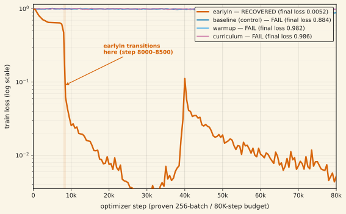
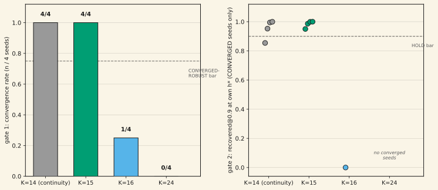

Finding no. 14 showed exact O(log h) composition for a single in-context-written relation. This note asks the natural next question: does it extend to a bank of relations — R=3 independent operators sharing one K=8 pool, selected by a query-supplied relation id? The exact contender itself would not train at R=3: Phase-0 (single seed, 20K steps) read flat chance in-distribution, train loss stuck at 0.982. Diagnosis: a step-budget miscalibration, not a bug — the proven single-relation recipe needs ~600 steps just to leave loss 1.0, and this cell used 21× fewer examples. The bank architecture is proven regardless, by a fully-trained fast-weight-memory baseline (fwm-bank): in-distribution recovered@0.9 = 0.87 / 0.89 / 0.88 at h=1/2/3 (minimum over all 3 relations), and a relation-ID-swap ablation fires the intended capability-isolation teeth cleanly — right-relation cosine 0.725 vs wrong-relation 0.105 (gap 0.621) — while a LoopedVec-bank control stays correctly relation-insensitive (0.304 vs 0.311) and the untrained exact contender is vacuous (gap 0.008). Re-running the exact contender at the proven single-relation budget (256/80K, 3× more data) refuted "it just needed more budget": still 0.0 in-distribution recovery. A targeted diagnosis then found the fix: annealing a parameter-free inter-hop LayerNorm from weight 1 to 0 over the first half of training (gone by the end — eval always uses the pure exact-matmul read) recovers convergence, where three other interventions (plain re-run, LR/loss warmup, curriculum over R) all reproduce the flat-chance failure. The recovered arm (earlyln) was reported at n=1 seed: train loss 0.0052, in-distribution recovered@0.9 = 1.0/1.0/1.0, restricted effective rank 7.98–7.99 of 8, swap gap 0.553 — genuine, relation-selective, non-degenerate operators. A seed replication has since run to n=9 (the original seed plus 8 more, one per GPU): convergence held 9/9 — every seed's in-distribution recovered@0.9 = 1.000, 0/9 dead seeds. Far depth is seed-bimodal, not uniformly open: at h*=61, min-over-r recovered@0.9 sorted across all 9 seeds reads 0.000, 0.000, 0.000, 0.004, 0.012, 0.615, 0.811, 0.918, 0.984 — only 2/9 clear the strict 0.9 bar, though the four lowest-phase-residual seeds (max ≤0.0086) are exactly the four that clear 0.615+, an observed pairing, not yet shown causal. A separate write-capacity extension of the R=1 architecture confirms exact composition at K=14 (recovered@0.9 = 1.000, phase residual 0.0072, matching K=12's cleanliness) before hitting the same trainability cliff at K=15 and K=16, which a 4× parameter increase does not rescue. Phase-0, the recalibration, and the K=14–16 write-capacity probe remain n=1 per cell. A pre-registered follow-up then tested the obvious next question directly: does earlyln — the fix that rescued the R=3 bank — also rescue the R=1 K-scaling wall? 16 cells (K∈{14,15,16,24} × 4 seeds, 80K/256 each): it does not unlock the K axis wholesale, but it moves the wall exactly one rung. K=15, plain-recipe DEAD at n=1, is now 4/4 CONVERGED and HOLDS far-depth composition (median recovered@0.9 = 0.9929 at h*=117, all 4 seeds in the HOLD band). earlyln also improves write quality at every rung it converges — K=14's residual drops from the plain recipe's 0.0072 to 0.0020–0.0042, and its far-depth failure front moves from h=53 to 109–221. The wall re-forms at K=16 (1/4 converged, and even that seed's write is 10–20× dirtier, killing far depth at the first ladder rung) and K=24 (0/4 converged, but a distinct partial-formation profile — loss descends to ≈0.36 with restricted effective rank climbing to ≈17.7 of 24, not the flat-loss rank-1 collapse of the plain recipe — pointing at budget/anneal-schedule as the next lever, not architecture). Pooled verdict over the scored rungs K∈{15,16,24}: TRAINABILITY-STILL-LIMITED. Verdict of record: CONVERGENCE REPLICATED 9/9, FAR DEPTH SEED-BIMODAL (the R=3 bank); TRAINABILITY-STILL-LIMITED, WALL MOVES ONE RUNG (the K-scaling follow-up). The bank architecture works (on a trained baseline); the exact contender's trainability blocker is solved and now replicated across seeds; whether the recovered contender reliably beats its baselines at far compositional depth is seed-dependent and still open; and the same fix, tested directly on the K axis, buys exactly one more working rung before the wall re-forms, with each failure rung now showing its own diagnosable profile rather than one undifferentiated collapse. Unpublished.
01What a "bank" adds, and why it's harder
Finding no. 14 wrote one relation operator per episode. A bank writes R = 3 independent relation operators from a single K=8 pool in one context, and a query specifies which relation to compose h times before reading. This is the natural generalization toward "a model that holds several distinct learned rules simultaneously and applies the right one on demand" — closer to how a real reasoning system would use in-context operators. It is also strictly harder on two axes at once: the shared encoder must write three non-interfering operators from one trunk instead of one, and the read must select the correct operator before composing it, not just compose whatever was written.
The design (BankBindingEncoder: a shared trunk plus R row-query sets) went through the project's full gauntlet before any GPU time: a fresh-opus attack round found and closed a gameable bank-scoring metric (a 3-seed counterexample could read every relation-median as 1.0 with zero genuine banks) and a dropped-metric bug on deviating arms; an independent build audit then caught a real strawman-baseline bug — the LoopedVec-bank control never received the query's relation id, making its comparison score structurally uninterpretable — fixed by tagging the query with the existing relation embedding (zero new parameters) and closed with its own causal mutation proof (zeroing the embedding collapses the arm to relation-blind, as it should).
02Phase-0: the exact contender doesn't train, but the architecture does
Phase-0 ran one seed per arm at 20K steps (batch 48 — a calibration-budget cell, not the proven single-relation recipe of batch 256 / 80K steps). The exact (NCR-bank) contender read flat chance: mean cosine ≈0 at every h, train loss 0.982. This is not a plumbing bug — the same contender overfits a single fixed batch to loss 0.0018 when asked to (forward and gradient are correct) — it is a slow-to-transition optimization dynamic, the same class finding no. 14 documented for the single-relation model at low step budgets, now compounded by 3× the write load on a shared channel.
Critically, the bank architecture is separable from the exact contender's convergence problem, and a fully-trained baseline proves it works: the fast-weight-memory bank (fwm-bank) reads in-distribution recovered@0.9 = 0.87 / 0.89 / 0.88 at h=1/2/3 (minimum over all 3 relations, mean cosine ≥0.95) — the shared-trunk encoder writing three operators from one context, and the read correctly selecting the one the query asks for, demonstrably works. The relation-ID-swap ablation is the capability-isolation teeth this design exists to demand: feed the model the right query but the wrong relation id, and recovery should collapse if the model is actually relation-selective rather than blurring all three together.
| arm | right-relation cosine | wrong-relation cosine | gap | reading |
|---|---|---|---|---|
| fwm-bank (trained baseline) | 0.725 | 0.105 | 0.621 | genuine relation-selective capability isolation |
| loopedvec-bank (control) | 0.304 | 0.311 | −0.007 | correctly relation-insensitive — a vector map with no relation signal should NOT show a gap, and doesn't |
| ncr-bank (untrained, Phase-0) | 0.011 | 0.002 | 0.008 | vacuous — no trained model to probe yet |
The trained baseline's 0.621 gap and the control's −0.009 non-gap are exactly the dissociation the ablation is designed to produce; the exact contender's near-zero gap simply reflects that Phase-0 never trained it. Standing fact after Phase-0: the bank mechanism works; whether the O(log h) exact contender can learn it is still open.
03Recalibration: "just needed more budget" is refuted
The obvious next hypothesis — Phase-0 simply under-budgeted the exact contender relative to the proven single-relation recipe — was tested directly: one seed, re-run at the identical 256-batch / 80K-step recipe finding no. 14 used for R=1 (≈3× more data than Phase-0). It did not converge: train loss 1.0011 → 0.8776 (barely moved; single-relation NCR reaches ≈0.0018 at this budget), in-distribution recovered@0.9 = 0.0 at every h (mean cosine 0.09–0.12), restricted effective rank collapsed to 2.4–3.5 (a converged operator needs ≈8), and the relation-swap gap read 0.0009 — no signal, a relation-agnostic blur rather than the fwm-bank's clean 0.621 separation. Refuted: sizing a wave off a non-converged contender would have been the project's own documented calibration-first mistake; the R=3 contender needs something other than more data.
04Diagnosis: an annealed LayerNorm recovers convergence
Four single-seed arms tested candidate fixes at the proven 256/80K budget: a plain re-run (control, reproducing §03), an LR/loss warmup schedule, a curriculum that ramps the number of active relations, and earlyln — a parameter-free LayerNorm blended into the training-time read with weight α annealed linearly from 1.0 to 0.0 over the first half of training, then fully removed. At α=0 the forward pass is bit-identical to the plain exact-matmul contender (closed-form verified); evaluation always uses the inherited pure-matmul exact read (binary exponentiation vs an fp64 power reference), never the LayerNorm.
| arm | train loss | in-dist rec@0.9 (min over r, h=1/2/3) | restricted eff. rank | swap gap | verdict |
|---|---|---|---|---|---|
| earlyln | 0.0052 | 1.0 / 1.0 / 1.0 | 7.98–7.99 | +0.553 | RECOVERED |
| baseline (control) | 0.884 | 0.0 / 0.0 / 0.0 | 2.44–3.50 | +0.0009 | FAIL (reproduces §03) |
| warmup | 0.982 | 0.0 / 0.0 / 0.0 | 1.70–2.42 | +0.0011 | FAIL |
| curriculum | 0.986 | 0.0 / 0.0 / 0.0 | 1.67–2.48 | −0.0020 | FAIL |

All three of earlyln's pre-registered recovery legs are cleanly met: in-distribution min-over-relations recovered@0.9 = 1.0 ≥ the 0.9 bar; restricted effective rank climbs to ≈7.99 of a possible 8 (operators formed to near-full rank, phase residual collapsing from 0.93–1.47 down to 0.016–0.020 — near-roots-of-unity permutation operators, the geometry a converged operator should have); and the swap gap (0.553, right-relation 0.666 vs wrong-relation 0.113, control −0.009) clears the pre-registered 0.3 bar — genuine relation-selective reading, not a blur. The other three arms all reproduce the flat-chance failure, which is what makes the recovery specifically attributable to the LayerNorm intervention rather than a schedule effect or a spontaneous transition.
05What's still open: far depth
earlyln converges in-distribution (h=1, 2, 3 — perfect, now confirmed 9/9 across a seed replication) and forms genuine, relation-selective operators in every seed. It has been shown to compose correctly at far depth in some seeds but not others — a genuine seed-bimodal split, not a uniform partial failure. At h*=61 — this design's own pre-registered far-depth comparison point, inherited from the single-relation design in finding no. 14 — the 9 replicated seeds' min-over-r recovered@0.9, sorted, reads 0.000, 0.000, 0.000, 0.004, 0.012, 0.615, 0.811, 0.918, 0.984: only 2/9 clear the strict bar, 2 more sit in (0.5, 0.9), and 5 fall below 0.5. An observed pairing across the 9 seeds (reported as observed, not shown causal): the four seeds with the lowest converged phase residual (max ≤0.0086) are exactly the four seeds with far-61 recovery ≥0.615, while the five seeds with higher residual (≥0.019) all sit at or below 0.049 recovery at h*=61. Phase error compounding multiplicatively over 61 hops of repeated squaring is a plausible mechanism connecting the two — a converged operator with slightly higher per-hop residual would compound to a much larger error by hop 61 — though this note does not claim to have isolated the cause, only to have surfaced the correlation.
RECOVERED means the trainability blocker — the exact contender would not learn the bank task at all — is solved, and that result now replicates across 9 seeds. It does not mean the bank contender is shown to beat its baselines at far compositional depth; that head-to-head is seed-dependent (2/9 clear the strict bar) and remains a separate, still-open gate this diagnosis did not close.
06A related result: exact composition extends to K=14, then hits a wall
A separate, single-relation (R=1) write-capacity probe asked a narrower question: how far past finding no. 14's tested K=8 and K=12 does exact composition extend on the plain (non-earlyln) recipe? Four single-seed cells at K∈{14, 15, 16} (two K=16 variants, one with 4× the hidden width):
| cell | params | train loss (step 1 → 80K) | restricted eff. rank | in-dist rec@0.9 | outcome |
|---|---|---|---|---|---|
| K=14 (d=16, h=64) | 170,896 | 0.9997 → 0.0012 | ≈14.0 | 1.000 | CONVERGED |
| K=15 (d=16, h=64) | 170,896 | 1.0049 → 0.9915 | 1.4–2.9 | 0.000 | DEAD (did not train) |
| K=16, cond. A (d=32, h=64) | 175,008 | 1.0052 → 0.9988 | ≈1.0 | 0.000 | DEAD |
| K=16, cond. B (d=32, h=128) | 677,664 | 0.9973 → 0.9964 | ≈1.0 | 0.000 | DEAD (4× params, no help) |
K=14 is a real, clean positive result — a new converged datapoint beyond finding no. 14's K=8 and K=12, independently shadow-certified (every fp64 shadow delta ≈5×10⁻⁸, binary-exponentiation and loop-read agree, zero flags): exact composition holds to a failure front at h=53 (h=11 and h=25 both read 1.000), and its phase residual (0.0072) is identical to K=12's archived value — the write is exactly as clean as it was two relation-sizes ago, wherever the model actually trains. K=15 and both K=16 conditions, by contrast, never left a train loss near 1.0 across all 80K steps — a discrete trainability collapse, the same failure class §04 diagnosed and fixed for the R=3 bank, not a gradual write-quality degradation. Because none of the K=16 cells trained, the original question this probe was built to answer (does extra capacity rescue a converged-but-degraded write, or does the write itself break at higher K) was MIXED / unresolved at the time — both K=16 conditions collapsed to the identical degenerate rank-1 solution, which is not evidence about write quality, just evidence that neither cell trained. The pre-registered next step — a re-run of K=15/16 with earlyln and ≥4 seeds, since only a cell that actually trains can measure whether the write breaks or capacity rescues it — has since run. §07 reports it.
07K-scaling under earlyln: the wall moves one rung
§06 left an explicit, pre-registered next step open: re-run K=15/16 with earlyln at ≥4 seeds, and extend the ladder to a new, never-tested rung. That run has completed (NOVEL_ARCH_WATERFALL.md §11/§11.1/§11.2, opened and pre-registered before any GPU was touched): 16 cells, K∈{14, 15, 16, 24} × 4 seeds, the same 256-batch / 80K-step earlyln recipe as §04's bank recovery, scored on two independent, separately-gated criteria per K — gate 1 (convergence): does in-distribution recovered@0.9 ≥ 0.9 in ≥3/4 seeds ("CONVERGED-ROBUST")? — and, ONLY on cells that individually converge, gate 2 (far depth): is the converged cells' median recovered@0.9 at that K's own pre-registered h* in the HOLD band (≥0.9)? K=14 is a continuity check (it already converges on the plain recipe); the pooled verdict is scored as the WORST label among K∈{15, 16, 24} so no single good rung can be cherry-picked into an overall claim.
| K | conv. rate (gate 1) | gate-1 label | far-depth median @ h* | ladder verdict |
|---|---|---|---|---|
| K=14 (continuity) | 4/4 | CONVERGED-ROBUST | 0.9737 → HOLD | SCALES |
| K=15 | 4/4 | CONVERGED-ROBUST | 0.9929 → HOLD | SCALES |
| K=16 | 1/4 | CONVERGED-PARTIAL | 0.0 (the 1 converged seed) | TRAINABILITY-STILL-LIMITED |
| K=24 | 0/4 | TRAINABILITY-DEAD | — (none converged) | TRAINABILITY-STILL-LIMITED |

Pooled verdict (worst-of over the scored rungs K∈{15, 16, 24}): TRAINABILITY-STILL-LIMITED. Said plainly: the earlyln recipe does not unlock the K axis wholesale. It moves the trainability wall exactly one rung. K=15 — plain-recipe DEAD at n=1 in §06 — is now 4/4 converged and holds exact composition at far depth (h*=117, median 0.9929, every seed in the HOLD band, residuals 0.0020–0.0032). The wall re-forms immediately after: at K=16, only 1/4 seeds converge, and even that seed's write is 10–20× dirtier than K=15's (δ=0.0441 vs 0.002–0.003) — far depth fails at the very first ladder rung (front=13). K=24 fails outright (0/4).
Three banked positives survive this pooled negative, each verified against the raw cell JSONs, not asserted:
- K=15 SCALES under earlyln — the first genuinely new K rung, beyond finding no. 14's K=8/K=12 and this page's own K=14, bought by a training-recipe fix alone, with no architecture change. The §9.10 "sharp single-seed cliff between K=14 and K=15" is now a recipe artifact at K=15, not a write-capacity wall — it has simply moved to sit between K=15 and K=16.
- earlyln improves write QUALITY, not just convergence. At K=14, the converged residual drops from the plain recipe's δ=0.0072 (§06) to 0.0020–0.0042 under earlyln, and the far-depth failure front moves from h=53 out to 109–221 — the annealed-LN training path lands the same exact-composition model in a measurably cleaner basin, even at a rung that was already converging.
- K=24 fails differently than the plain-recipe collapse. Loss descends from ≈1.0 to ≈0.36 (not flat), with restricted effective rank climbing to ≈17.7 of a possible 24 and residual 0.43–0.90 — partial operator formation, not §06's flat-loss rank-1 basin. earlyln moves K=24 off the dead basin without converging it at this budget, which points at budget/anneal-schedule scaling (longer anneal, more steps) as the next lever to test, distinct from K=16's profile (converges in loss to 0.027–0.091, but recovery gets stuck at 0.60–0.97 with dirty writes).
08The next-lever wave: the wall was mostly a dimension-mapping convention
§07 stopped for the coordinator with two priced-but-not-launched next steps: a 2×-budget/longer-anneal probe at K=16 (the profile there — loss converges, recovery stuck at 0.60–0.97 with dirty writes — looked budget-limited) and the same at K=24 (loss descending to ≈0.36 with rank climbing toward 17.7/24 — partial operator formation, not a dead basin). Both ran. K=16 at 2× budget (160,000 steps, 4 seeds): Gate-1 jumps 1/4 → 3/4 CONVERGED, and the failure front — the ladder rung past which composition breaks — moves from 13 to 29 in 3 of those 4 seeds. But far depth stays exactly 0.0 in all 4, unchanged from 1×. K=24 at 2× budget: budget-flat-to-worse — mean residual rose (0.659 → 0.812), one seed collapsed further to δ=1.238, in-distribution recovery stayed 0.0 in all 4, and the failure front stayed pinned at 21 (=K−3, the trivial train-residue rung) in every seed at both budgets. Budget alone buys real convergence at K=16 and nothing at K=24.
That asymmetry motivated a pre-registered design round (NCR_NEXT_LEVER_DESIGN.md, cleared through an independent opus attack round — 1 CRITICAL conceded and restructured, 2 SERIOUS, 4 MODERATE/MINOR, all dispositioned before any cell launched) that set up a genuine three-way discriminator rather than one more parameter sweep. Three mutually exclusive, pre-pinned stories predicted opposite outcomes for the same experiment: Story S1 (this project's own earlier Mechanism-1 model, δ ∝ 1/spare-fraction) says a tighter state — less spare dimension beyond K — makes write quality worse, predicting a converged K=16 residual ≈8× worse than d=32's best seed; Story S2 (a convention-confound reading, seeded by the observation that K=14 and K=15 — both already at the tight spare gap d−K≤2 under this program's own ladder — trained cleanly while K=16 jumped to the much wider spare-fraction 0.5 convention) says the wall tracks the d=2K state-sizing convention itself, not absolute K, and predicts the opposite; and the registry's own absolute-K-cliff reading (§9.2) predicts K=16 fails no matter what d is set to. One clean experiment — retraining K=16 and K=24 at the tightest legal spare dimension, d=K+1, instead of the conventional d=2K — kills at least one story regardless of which way it lands.
20 cells ran on 2026-07-12 (queue jobs 060–081, ≈13.61 GPU-h of the design's 14.05 nominal): Q1 pushed K=16/d=32 to 4× budget (320,000 steps) to see whether the 1×→2× convergence trend was a real law; Probe A retrained K=16 at d=17 and K=24 at d=25 (both tight-spare, d=K+1) at plain 1× budget; Probe B held budget fixed and stretched the LayerNorm withdrawal schedule (anneal_frac 0.5 → 0.75) at both K. All three verdicts were read mechanically off the design's own pre-registered map, not judgment-called after the fact.
Q1 — the budget axis is NO-LAW, not a slowing law
Gate-1 convergence kept improving monotonically with budget (1/4 → 3/4 → 4/4 CONVERGED across 1×/2×/4×), which is the result a naive read would stop at. But the design's own diagnostic — matching each seed's write-residual (δ) and failure front across all three budgets, not just the pooled convergence rate — tells a different story: δ increased from 2× to 4× in 3 of 4 seeds (worse, not better, with more budget), and the one seed that was CONVERGED at 2× with front=29 regressed to front=13 at 4× despite staying CONVERGED and despite its own δ getting worse. Two of the design's three independent pre-registered anomaly triggers fired at once. Per the pinned rule, that forecloses extrapolation outright — this is not a "law that's flattening," it is 3 of 4 seeds moving the wrong direction, a distinct failure category the design map treats separately from a slowing law. A read-only trajectory check (the final 10% of each seed's training, the pure post-crutch window) found no visible loss-based explanation: training loss stays flat-to-improving in every seed across exactly the steps where δ and the failure front got worse — whatever drives the regression doesn't show up in the objective the model is actually optimized on. The conditional 8× budget reconnaissance this design priced never fired, on two independent grounds: its only firing condition (a clean law crossing into reach) never triggered, and separately the realized wave spend left only 6.39 GPU-h of headroom against the 6.60 the recon needed.
Probe A — tight-spare (d=K+1) CONFIRMS at both K
Retraining at the tightest legal spare dimension reaches 4/4 CONVERGED at both K=16 and K=24, on 1× budget alone — where d=2K needed 4× budget to reach 4/4 at K=16, and never reached even 1/4 at K=24 at any budget or anneal-shape tried. That result independently clears the pre-registered ≥3/4 bar at both K, which per the design's map falsifies both Story S1 and the pure absolute-K-cliff story at both K simultaneously — one experiment killing two stories twice over. The write-quality discriminator is even sharper than the convergence count: Story S1 predicted a converged K=16 residual around 0.35 (δ∝1/spare-fraction, ~8× worse than d=32's best seed); the measured range is 0.0028–0.0058 — 60–125× lower than S1's prediction and squarely inside Story S2's predicted 0.002–0.005 band, the same band K=14 and K=15 already occupy. At K=16 specifically, tight-spare also reaches genuine far-depth composition that d=32 never touched at any budget or anneal tried this session: 0.80–0.99 recovered@0.9 at h*=125 in 2 of 4 seeds, with those same 2 seeds holding one further ladder rung out (front=253). No d=32 cell — not at 1×, 2×, 4×, or anneal_frac=0.75, 16 cells total across three waves — ever produced a far-depth recovery above 0.0001.

The distinction that must not get collapsed: at K=24, tight-spare solves Gate-1 (convergence) but not Gate-2 (far depth). K=24/d=25's four converged seeds land far-depth fronts of {21, 93, 189, 189} and sweep-minimum recoveries of {0.0511, 0.0000, 0.0448, 0.0000} — real in two seeds, essentially zero in the other two, no seed clearing a meaningful bar. K=16's tight-spare far-depth win is strong; K=24's is not — a CONFIRM on the convention question, not a claim that K=24 is solved end to end.
Probe B — anneal shape: partial confirm at K=16, falsified at K=24
Stretching the LayerNorm withdrawal schedule at fixed 1× budget (anneal_frac 0.5 → 0.75) isolates whether Q1's budget effect was actually an anneal-length effect in disguise. At K=16 it partially is: Gate-1 moves 1/4 → 2/4 CONVERGED, and mean δ drops 38.5% (0.1040 → 0.0640) — roughly half of the 2×-budget cell's 72% drop at the same δ metric — so a longer anneal at the same step count reproduces a material fraction of the budget effect on write quality. But the failure front stays pinned at 13 in all 4 B-16 seeds, versus the 2×-budget cell's move to 29 in 3 of 4 — anneal length alone buys write-quality improvement but zero far-depth movement; the extra raw step count budget-scaling provides appears to matter specifically, not just the longer anneal it also happens to imply. At K=24, Probe B is flatly negative: Gate-1 stays 0/4, in-distribution recovery stays 0.0 in all 4, the failure front stays pinned at 21 (trivial) in all 4, and the δ shift (0.659 → 0.579, a 12% dip) sits entirely inside the pre-existing K=24 seed-to-seed noise band (the 2×-budget cell alone spanned 0.511–1.238). Because the design's named-backup candidate (curriculum warm-start from a trained K=16 model) only fires if both Probe A and Probe B land negative at K=24, and Probe A landed positive there, that backup path stays closed — the live K=24 lever remains the tight-spare convention line, not curriculum warm-start.
What this wave does NOT establish, stated plainly. (1) The d(K) mapping law's shape at K≤24. Whether d=K+1 is the optimal spare fraction, or whether d∈{1.25K, 1.5K} would do better or worse at K=16/K=24, is untested by this wave — the design's own follow-on s-sweep is priced but not run here. (2) K>24 behavior under the corrected mapping — UPDATE, now tested and NEGATIVE, not merely open. A follow-up 12-cell K=32 generalization test found the tight-spare convention does not extend past K=24: every cell dead at every d tried (d=K+1, 1.25K, 1.5K), including Gate-1 in-distribution convergence itself. See §09. (3) Why d=2K hurts far depth specifically. K=24/d=48's failure across every budget and anneal-shape actually tried at that K (1×, 2×, anneal 0.75 — 12 cells, always 0/4; no 4× variant was ever run at K=24) is suggestive, but no controlled experiment isolates "d=2K per se" from "this particular K/d pairing" as the causal factor — mechanism remains open, and does not explain the K=32 result either (§09). (4) K=24's far-depth reliability even under d=K+1. Gate-1 convergence is solved, but the four converged seeds' fronts span the full range from trivial (21) to the pre-registered target (189) within one cohort — an unexplained variance this wave surfaces but does not resolve.
09The mapping-law grid: K=32 breaks the tight-spare fix
§08's own disclosed gap (item 2 in "what this wave does NOT establish," above) named the obvious next question: does the d=K+1 tight-spare convention that CONFIRMED at K=16 and K=24 keep working past K=24? A pre-registered generalization test answers it, and the answer is negative. 12 cells ran 2026-07-12 (queue jobs 009–020 of the mapping-law wave, NCR_MAPPING_LAW_DESIGN.md, independent opus audit CLEARED before launch — 0 FATAL / 0 SERIOUS / 1 NIT, fixed): K=32 at three spare-dimension settings — d=33 (K+1, the tight-spare convention that confirmed at K≤24), d=40 (1.25K), and d=48 (1.5K) — × 4 seeds each, scored on the same Gate-1 (convergence) / Gate-2 (far depth) criteria as §07/§08.
| d | convention | Gate-1 (convergence, /4) | best cell, indist. min recovered@0.9 | write residual (phase resid.) range | failure front | far-depth @ h*=253 |
|---|---|---|---|---|---|---|
| d=33 | K+1 — the confirmed K≤24 convention | 0/4 CONVERGED (3 PARTIAL, 1 DEAD) | 0.871 | 0.594–0.986 | 29 (=K−3) | 0.0 |
| d=40 | 1.25K | 0/4 CONVERGED (4 DEAD) | 0.001 | 0.402–1.305 | 29 (=K−3) | 0.0 |
| d=48 | 1.5K | 0/4 CONVERGED (4 DEAD) | 0.000 | 0.708–0.991 | 29 (=K−3) | 0.0 |
All 12 cells are dead, and this is a stronger negative than "converges but doesn't compose far." §08's own K=24/d=25 result already showed Gate-1 solved with far depth weak and seed-variable; K=32 fails one gate earlier than that — Gate-1 in-distribution convergence itself never clears the 0.9 bar at any of the three d's tried (0/12 CONVERGED overall, re-derived directly from each cell's raw eval.points using the harvest script's own formula: indist_min = min recovered@0.9 over train-support h∈{1,2,3}; CONVERGED requires indist_min≥0.9 and mean A_eff_rank≥0.9K), including at d=K+1, the exact mapping that reached 4/4 CONVERGED at both K=16 and K=24 on 1× budget alone. The best cell anywhere in the grid (d=33, seed 3) reaches indist_min = 0.871 — under the 0.9 bar, the same kind of near-miss this project's own convention elsewhere labels PARTIAL, not CONVERGED. The failure front sits at 29 (=K−3) in all 12 cells — the trivial train-residue rung, meaning composition never reaches a single rung past the training distribution — and far-depth recovery at the pre-registered h*=253 reads 0.0000 everywhere, consistent with Gate-1 never converging. The registry's own formal rule (NCR_MAPPING_LAW_DESIGN.md §1.6, applied mechanically) reads this grid as CLOSED-AT-THIS-K: none of the three tested d-arms reaches CONVERGED-ROBUST, so the K-ladder escalation stops at K=32 and the planned K=48 grid stays blocked, not launched. A same-K citation-only reference at the conventional d=2K (d=64, 4 more seeds, previously measured, no new spend) is also 4/4 DEAD with front pinned at 29 — every d value tried at K=32, tight or wide, fails Gate-1.
Data: read directly from the raw per-cell JSONs on box youthful-indigo-turkey (~/ncr/results_earlyln_dratio{,125,150}/earlyln_K32_s{0-3}.json, queue jobs 009–020, ≈6.37 GPU-h total), re-derived using the production harvest script's own Gate-1 formula (ncr_earlyln_scale.py::_cell_gate1), not read from any intermediate summary — and cross-checked bit-for-bit against the registry's own independently-pulled harvest. Design and pre-launch audit: matrix-thinking/NCR_MAPPING_LAW_DESIGN.md. Registry verdict record: matrix-thinking/NOVEL_ARCH_WATERFALL.md §11.5 (WAVE-1 harvest, 21/21 cells, queue jobs 008–028; 0 axis_c_lock/status/blank_out anomalies across all 25 cells pulled).
10Caveats — read before citing
- Most Phase-0/recalibration/diagnosis numbers are still n=1 per cell — earlyln convergence at the bank (R=3, K=8) is n=9, and earlyln convergence on the K-scaling ladder (§07 mains, §11.3, §11.4) is n=4 per K/cell per condition. Phase-0, the recalibration, and the four-arm convergence diagnosis are all still single-seed cells. The bank's earlyln convergence result is seed-replicated to n=9 (0/9 dead). Every K-scaling and next-lever cell (§07, §08) runs 4 seeds, the project's own standing minimum for a CONVERGED-ROBUST/DEAD label — sub-4-seed rungs are never gated, only disclosed.
- Far-depth capability is seed-bimodal at the bank, and rung/mapping-dependent on the K-scaling axis — none of these are uniformly established or ruled out. The bank's earlyln converges in-distribution in every one of 9 replicated seeds, but at h*=61 only 2/9 seeds clear the strict 0.9 recovered@0.9 bar (sorted: 0.000×3, 0.004, 0.012, 0.615, 0.811, 0.918, 0.984) — see §05. Under the conventional d=2K mapping (§07), K=15 holds far depth in all 4/4 converged seeds (median 0.9929) but K=16's single converged seed reads 0.0. Under the tight-spare d=K+1 mapping (§08), K=16 reaches the HOLD band in 2/4 seeds while K=24's far depth stays weak and seed-variable (0.00–0.06) even though Gate-1 is solved. Nothing on this page claims either axis's exact contender reliably beats its baselines at far compositional depth in general — only at the specific rungs, mappings, and seeds shown.
- The write-capacity K=15/16/24 result under the conventional d=2K mapping is TRAINABILITY-STILL-LIMITED, not "K-scaling solved" — and the tight-spare CONFIRM (§08) is a convention finding scoped to K≤24, not a general K-scaling solution. §07's pooled verdict over K∈{15,16,24} is the worst-of label by design, so K=15's clean SCALES result cannot be cherry-picked into an overall claim. §08's Probe A result licenses (and §09 then runs) a follow-on mapping-law sweep at K=32 (d∈{K+1, 1.25K, 1.5K}) — it does NOT establish that K>24 behaves the same way: §09 found all 12 K=32 cells dead at every d tried, Gate-1 convergence included, so a K-dependent component of the wall re-emerges beyond K=24.
- Bank-architecture proof rests on a baseline, not the exact contender. The 0.87-0.89 in-distribution recovery and the 0.621 relation-swap gap that demonstrate the bank mechanism works were measured on fwm-bank — a fully-trained fast-weight-memory baseline — because it was the only fully-converged arm available at Phase-0. The exact (O(log h)) contender's own bank capability is demonstrated only in-distribution, only by earlyln, only at n=1.
- ≈42.29 GPU-h total across nine sub-experiments (Phase-0 ≈0.22, recalibration ≈0.46, convergence-recovery diagnosis ≈1.85, write-capacity probe ≈1.73, earlyln seed replication ≈3.94, earlyln K-scaling ≈7.06, §11.3 budget/anneal probes ≈7.05, §11.4 next-lever wave ≈13.61, §09 K=32 mapping-law grid ≈6.37) — still comparable to finding no. 14's 42.3 GPU-h single-relation program. No wave-scale sweep has been launched from any of these results; each stopped for coordinator routing, including §07's, §08's, and §09's own explicit pre-registered stops.
11Reproducibility
Every number above is read from archived, md5-verified raw JSONs, not from any intermediate summary. Phase-0: experiment-runs/2026-07-11_ncr_opbank_phase0/ (gate table, rate probe, 3 cell JSONs, 6 per-relation swap-ablation locks, md5 manifest). Recalibration: experiment-runs/2026-07-11_ncr_opbank_recal/. Convergence-recovery diagnosis: experiment-runs/2026-07-11_ncr_opbank_recover/ (4 cell JSONs, 12 per-relation locks, verdict JSON, md5 manifest). Write-capacity probe: experiment-runs/2026-07-11_ncr_wcap_diag/ (4 cell JSONs, 4 locks, harvest stdout, verdict JSON, md5 manifest). Seed replication (n=9): experiment-runs/2026-07-11_ncr_opbank_seedrep/ (SUMMARY.md, seedrep_harvest_summary.json, all 8 seed JSONs/locks/logs, md5 manifest). K-scaling under earlyln (§07): experiment-runs/2026-07-11_ncr_earlyln_scale/ (16 cell JSONs, 16 Axis-C locks, 16 cell logs, supervisor/worker scripts, DONE sentinel, harvest_verdict.json, exact build sources, rate-probe subdir, md5 manifest). 2× budget/anneal probes (§08): experiment-runs/2026-07-12_ncr_earlyln_budget2x/ (8 cell JSONs, 8 Axis-C locks, SUMMARY.md, md5 manifest). Next-lever wave (§08): experiment-runs/2026-07-12_ncr_nextlever_wave/ (20 cell JSONs across budget4x/, dratio/, annealshape/ subdirectories, 20 Axis-C locks, SUMMARY.md, md5 manifest). K=32 mapping-law grid (§09): 12 cell JSONs + 12 Axis-C locks on box youthful-indigo-turkey at ~/ncr/results_earlyln_dratio{,125,150}/earlyln_K32_s{0-3}.json (queue jobs 009–020), with the full 21-cell WAVE-1 (queue jobs 008–028, also covering the K=48 rate-probe citation and the K=24 seed-extension to n=12) archived at experiment-runs/2026-07-12_ncr_mappinglaw_wave1/ (25 pulled cell JSONs, Axis-C locks, SUMMARY.md, md5 manifest, repo tier). Design and gauntlet record: matrix-thinking/NOVEL_ARCH_WATERFALL.md §8.1-§8.10, §9.1-§9.10, §11-§11.5; matrix-thinking/NCR_NEXT_LEVER_DESIGN.md (the pre-registration, including the independent attack round record); matrix-thinking/NCR_MAPPING_LAW_DESIGN.md (the K=32 generalization test's pre-registration and audit).
This note extends finding no. 14, "O(log h) reads: 20.9× faster at depth 1,021 — and it composes exactly" from one relation to a bank of three, and its K=14 result extends the same finding's exactness frontier past K=12. Read finding no. 14 first for the base architecture, the exact-composition mechanism, and the O(h)-baseline comparisons this note inherits without re-deriving.
References
- Schlag, I., Munkhdalai, T., & Schmidhuber, J. (2021). Learning Associative Inference Using Fast Weight Memory. ICLR 2021, arXiv:2011.07831 — source of the fwm-bank baseline architecture that proves the bank mechanism works.
- Ba, J. L., Kiros, J. R., & Hinton, G. E. (2016). Layer Normalization. arXiv:1607.06450 — the normalization primitive annealed during training in the earlyln convergence fix.
- See also finding no. 14, "O(log h) reads: 20.9× faster at depth 1,021 — and it composes exactly" — the single-relation base result this note extends.